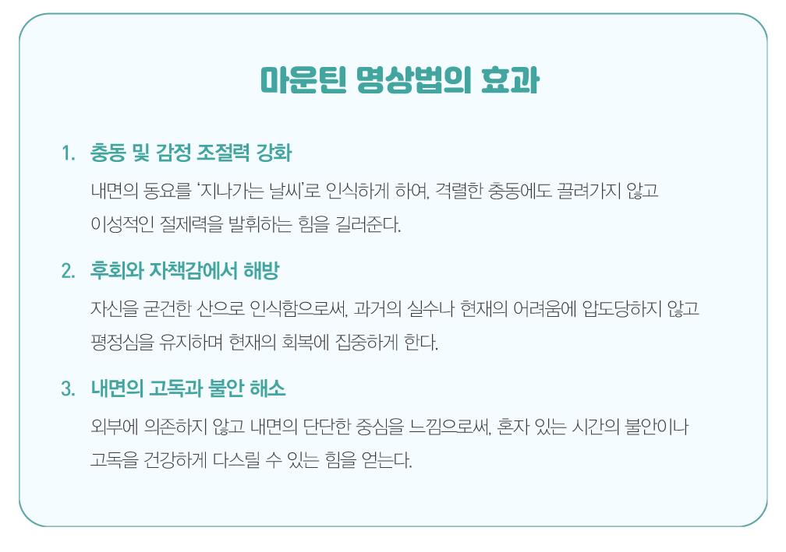
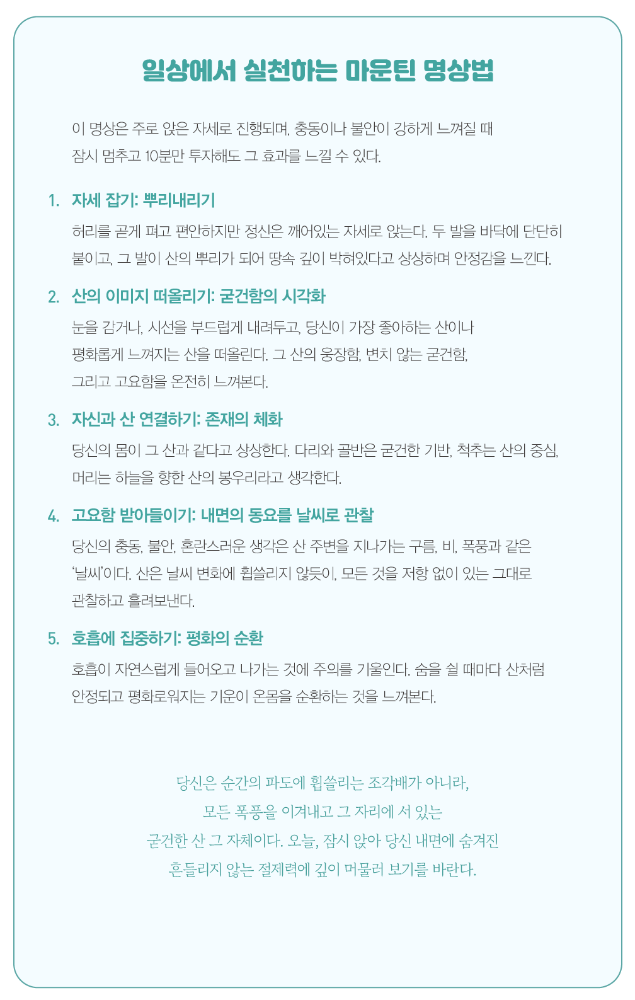

글. 편집실
참고. KAIST 명상과학연구소, MBSR 등
순간의 충동, 걷잡을 수 없는 불안, 그리고 매번 흔들리는 마음. 우리는
삶의 거센 파도 앞에서 자주 무너지고, 후회와 혼란 속에서 헤어나지
못하며, 정작 ‘나’라는 중심을 단단히 잡을 힘을 잃어버리고 만다.
참된 회복은 단순히 외부의 상황을 바꾸는 것을 넘어, 흔들림 없는
절제력과 평정심을 되찾는 나 자신과의 훈련이다. 오늘, 가장 단단한
마음의 중심 잡기 훈련인 ‘마운틴 명상(Mountain Meditation)’을 통해 그
방법을 알아본다. 충동과 불안이라는 폭풍우 속에서 굳건한 ‘나’를 세우는
회복의 여정이다.
삶의 과정은 늘 예상치 못한 어려움과 맞닥뜨린다. 끊임없이 유혹과 불안이
몰아치는 벼랑 끝의 순간을 마주할 때, 마운틴 명상은 이 순간 흔들림 없는
평정심을 되찾도록 돕는 검증된 심리 기법이다.
산은 수백 년 동안 그 자리에 굳건히 서 있다. 사계절이 바뀌고 폭풍우가
몰아쳐도, 산의 본질은 변하지 않는다. 우리의 충동과 감정도 마찬가지다.
순간의 강한 마음의 동요는 산을 지나가는 순간의 비바람일 뿐이다. 이
명상은 ‘나’를 산에 비유함으로써, 순간적인 강한 충동에 휩쓸리지 않고
내면의 절제된 중심을 지키는 훈련을 제공한다. 이것이 바로 우리가 회복의
과정에서 가장 절실히 필요로 하는 정서적 회복탄력성이다.
마운틴 명상은 마음속으로 그림을 그리는 상상을 통해 ‘나의 몸’과 ‘산의
불변성’을 연결하는 강력한 심리 훈련이다. 당신의 마음속에 생생하게
그려지는 산의 이미지는 흔들리는 당신에게 내면의 새로운 기준점을 제시해
준다.
이 훈련의 핵심은 객관적으로 바라보기라는 능력을 향상시키는 데 있다.
예를 들어, 강한 충동이나 불안이 밀려올 때, 우리는 보통 그 감정과
‘나’를 동일시하여 휩쓸리게 된다. 마치 ‘나는 지금 불안 그 자체야’라고
느끼며, 자신이 곧 불안이 된 것처럼 여기게 되는 것이다. 그러나 마운틴
명상을 통해 당신이 산이라는 굳건한 존재가 되면, 충동은 그저 산을 스쳐
지나가는 일시적인 날씨에 지나지 않는다. 당신은 더 이상 날씨 자체가
아니며, 폭풍우가 지나가도 산처럼 그 자리에 고요히 서 있다는 것을
깨닫게 된다.
이러한 관찰자 시점은 격한 감정의 소용돌이에서 당신을 분리시켜 상황을
차분히 살피게 한다. 이는 감정을 조절하고 현명하게 대처하는 능력을
키워주며, 당신의 의지를 순간적인 충동으로부터 보호하는 방파제 역할을
해준다. 이제 당신의 몸을 산으로 빚어내는 5단계 과정을 시작해 보자.

